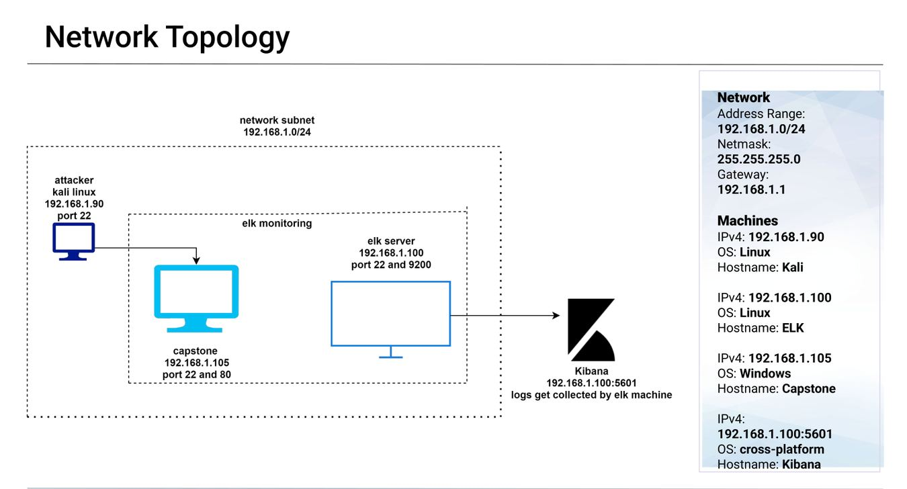
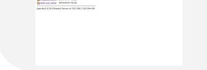
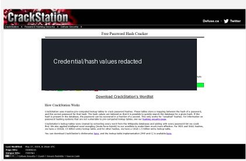
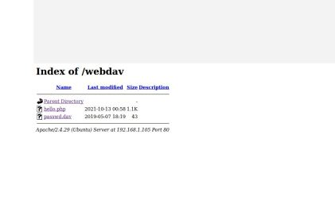
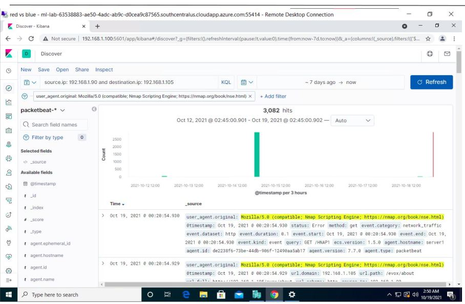
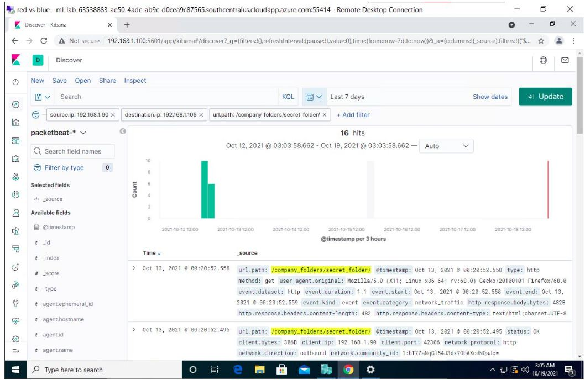
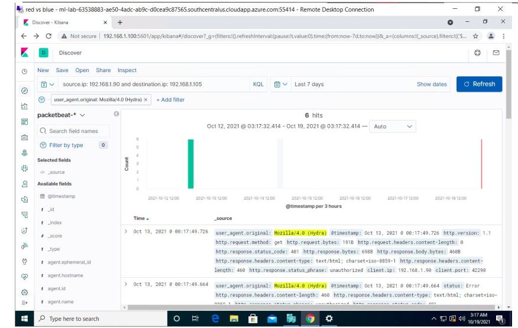
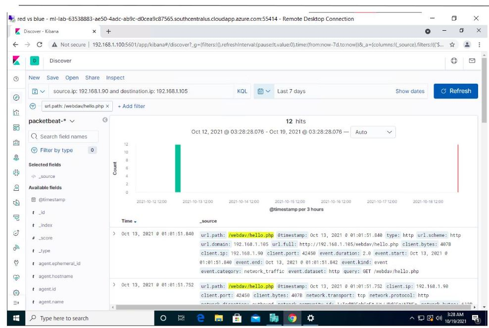

Red Team vs. Blue Team
Full-Scope Cybersecurity Capstone
A first-person attack-and-defense case study: reconstructing an attacker’s route from network discovery to Linux and application access, then evaluating the logs, alerts, investigations, and controls a defending team would need to detect and contain the activity.
Executive summary
In this historical cybersecurity capstone, I assessed a deliberately vulnerable network from two perspectives. On the Red Team side, I investigated exposed services, described an SSH credential compromise, and examined web files, WordPress configuration, database access, and a reported privilege-escalation path. On the Blue Team side, I evaluated how an ELK-based monitoring environment could help defenders investigate suspicious authentication, web traffic, system activity, and potential lateral impact.
Demonstrate attack paths
Identify accessible services, validate weaknesses in the authorized training lab, establish the documented foothold, and explain the impact of exposed files and credentials.
Investigate and improve detection
Identify relevant log sources, develop hypotheses for suspicious behavior, correlate attack phases to telemetry, and recommend containment and hardening actions.
Environment and scope
Kali Linux — attacking workstation
Target 1 — primary vulnerable Linux host
Target 2 — secondary lab host
ELK — security monitoring
Capstone host
Lab gateway / network
All listed addresses belong to the private training environment. The documented offensive chain focuses on Target 1. Listing other systems in the topology does not mean they were compromised.
Attack simulation and technical walkthrough
Discover network services
I started by enumerating the target to determine which network services warranted deeper inspection. The source material identifies SSH, HTTP, RPC-related service, and NetBIOS/SMB exposure. The command below illustrates the method rather than reproducing a captured terminal transcript.
nmap -sS -sV 192.168.1.110
Security reasoning: open ports identify attack surface; they do not by themselves establish exploitable vulnerabilities.
Test SSH authentication
The capstone describes Hydra recovering a working password for michael, followed by SSH login. The credential itself is intentionally withheld.
# Historical authorized lab example hydra -l michael -P /path/to/approved-wordlist.txt ssh://192.168.1.110 ssh michael@192.168.1.110
Security reasoning: the important weakness is guessable credentials and inadequate authentication defenses, not merely an accessible SSH port. The surviving material lacks a complete timestamped Hydra transcript.
Review accessible web files
After the reported SSH foothold, I investigated files under /var/www and reviewed challenge artifacts. This helped assess what the authenticated user could access.
find /var/www -type f 2>/dev/null ls -la /var/www/html
Security reasoning: an assessment should establish file ownership, permissions, and whether sensitive content is exposed beyond its intended trust boundary.
Inspect WordPress and MySQL
The presentation reports locating WordPress database connection details and using MySQL to investigate the wp_posts table. Because WordPress normally stores database credentials in wp-config.php, the finding depends on inappropriate readability or excessive database permissions, which are not fully evidenced.
# Validation examples; not claimed as captured outputs ls -l /var/www/html/wordpress/wp-config.php mysql -u <authorized-user> -p SELECT post_title FROM wp_posts WHERE post_title LIKE 'flag%';
Password recovery and reported sudo/Python escalation
The source presentation describes John the Ripper password recovery involving steven and a possible Python/sudo path to root. The exact sudo policy, command sequence, and UID 0 verification are not available, so root compromise remains reported but unverified.
# Required validation in a repeat lab sudo -l id whoami
Monitoring, investigation and detection engineering
The capstone included an ELK monitoring component and discussed HTTP error-rate changes, request volume and bytes, and CPU utilization as potential indicators. The following workflow translates the offensive activity into a practical defensive investigation plan. These are proposed detection and response steps, not claims that the original lab generated verified alerts.
Identify SSH password-guessing and subsequent access
Collect Linux SSH authentication events and look for repeated failures against one account followed by a successful login. Correlate source address, account name, target host, and event timestamps. If supported by ingested data, Kibana can group failed authentication events by source IP and username.
Investigative question: did a suspicious series of failures immediately precede the reported login as michael?
Inspect HTTP access patterns
Review web access logs for rapid URL discovery, elevated 404 responses, repeated requests from one source, and unusual request rates. The source material mentions HTTP errors and traffic volume as monitoring concepts; it does not establish a specific alert threshold or fired rule.
Investigative question: can a burst of enumeration activity be tied to the attacker workstation at 192.168.1.90?
Correlate process, file and database activity
Where audit logging is enabled, examine shell sessions, privileged commands, access to sensitive application configuration, and unusual database connections. Record the effective account and process ancestry to determine whether activity exceeded expected permissions.
Investigative question: did an SSH session access WordPress configuration or execute unexpected database commands?
Verify sudo events and identity changes
Review sudo and process telemetry for privileged interpreter execution and confirm whether the effective user changed. The original slides do not contain sufficient proof to assert a successful root transition.
Investigative question: was a privileged Python process actually started, and did it execute with UID 0?
Mapping attacker behavior to defensive evidence
| Red Team activity | Blue Team data source | Detection / response objective | Evidence status |
|---|---|---|---|
| Service reconnaissance | Network flow, firewall, IDS if available | Review connection patterns and service exposure | Attack method documented; network alert unverified |
| SSH credential guessing and login | Linux authentication logs | Detect repeated failures, verify successful login, rotate credentials | Login reported; log correlation not demonstrated |
| Web enumeration | HTTP access/error logs | Identify 404 spikes and unusual request volume | Monitoring indicators discussed; alert unverified |
| Web-root and config inspection | Linux audit / EDR file events | Confirm sensitive file access and permissions | Activity reported; telemetry not supplied |
| MySQL investigation | Database audit and connection logs | Identify unusual queries or excess privileges | Query activity reported; audit events absent |
| Python/sudo privilege path | Sudo logs, process execution, identity checks | Verify whether escalation occurred | Root transition unverified |
How I would triage and contain this attack
Based on the documented scenario, my defensive response plan would prioritize validating the SSH compromise, preserving logs, and reducing access to the exposed services. This section is a recommended workflow, not a record of containment already completed.
Confirm affected host, user, source IP, timestamps, and whether access was expected.
Review session history, application files, database connections, and possible privilege changes.
Disable or rotate affected credentials, restrict SSH sources, and isolate the host if warranted.
Correct weak authentication, inappropriate file access, sudo permissions, and vulnerable services.
Restore trusted access and verify application and database functionality.
Retest the attack path and verify monitoring can identify safe reproductions of the activity.
Security gaps and prioritized remediation
| Issue | Risk / confidence | Control recommendation |
|---|---|---|
| Weak SSH authentication | High concern; credential recovery and login described | Strong unique credentials, key-based authentication, rate limiting, MFA where feasible, centralized SSH logs |
| Application credential exposure | Potential impact; file permissions unverified | Restrict configuration access, minimize DB privileges, rotate exposed secrets |
| Privileged Python execution | Potential high impact; successful escalation unverified | Audit sudoers and remove unrestricted privileged interpreter execution |
| Monitoring and alert validation | Visibility gap; no documented alert-firing evidence | Collect SSH, web, sudo, process, and database logs; test and document detection results |
Capstone screenshot gallery
The eight screenshots below were uploaded from the historical capstone materials. They are preserved as original evidence and can be opened at full size. Their filenames alone do not establish a specific detection or exploitation result.








What I learned from both sides
Working through the Red Team perspective showed me how service exposure, authentication weaknesses, and accessible application resources can form an attack chain. Viewing the same activity from the Blue Team perspective taught me to ask a different set of questions: what telemetry would exist, which events could be correlated, how could an analyst verify the behavior, and what controls would interrupt the chain?
The most important reporting lesson was to separate an attacker action, an observable system event, a detection hypothesis, and a verified alert. That distinction makes the capstone useful as both an offensive-security walkthrough and a defensible security-monitoring case study.